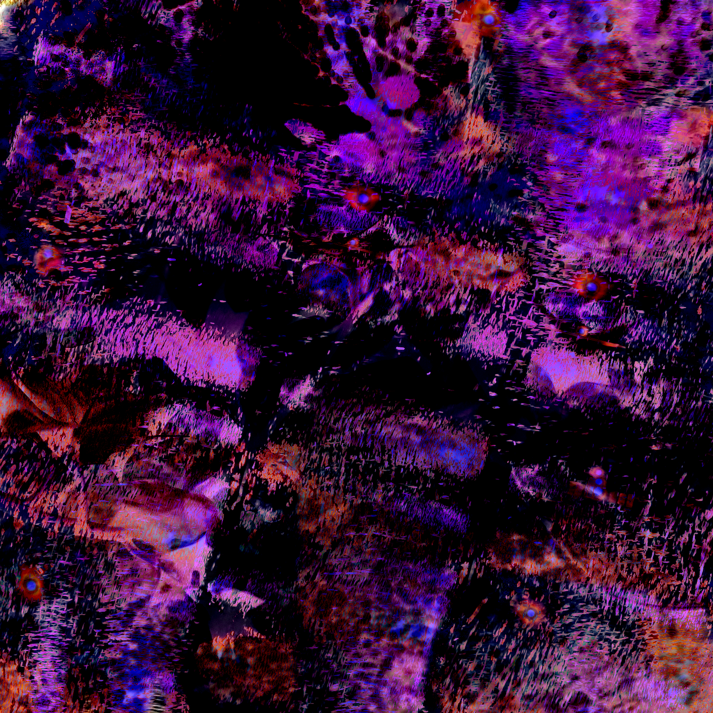
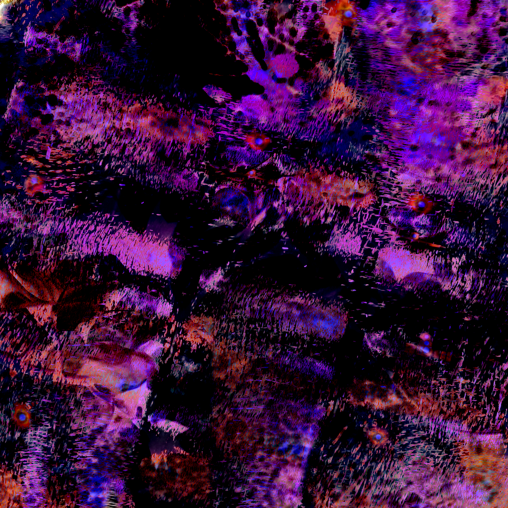
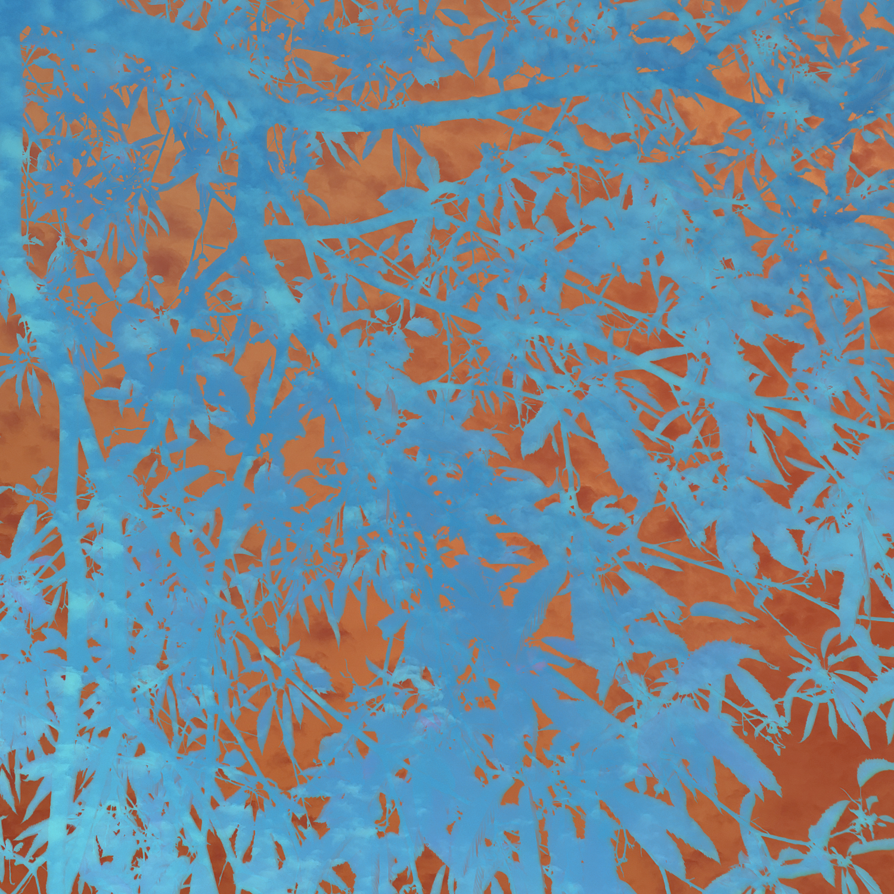
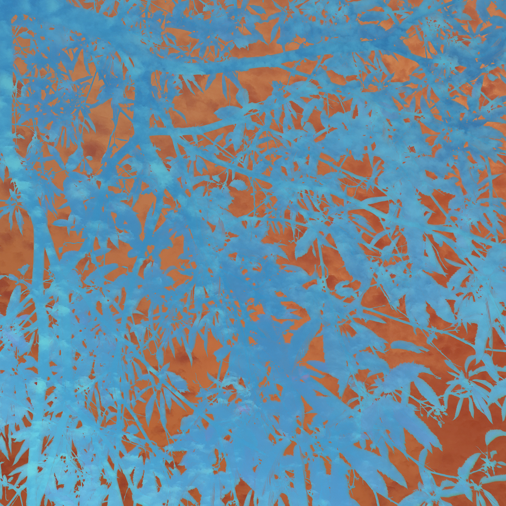
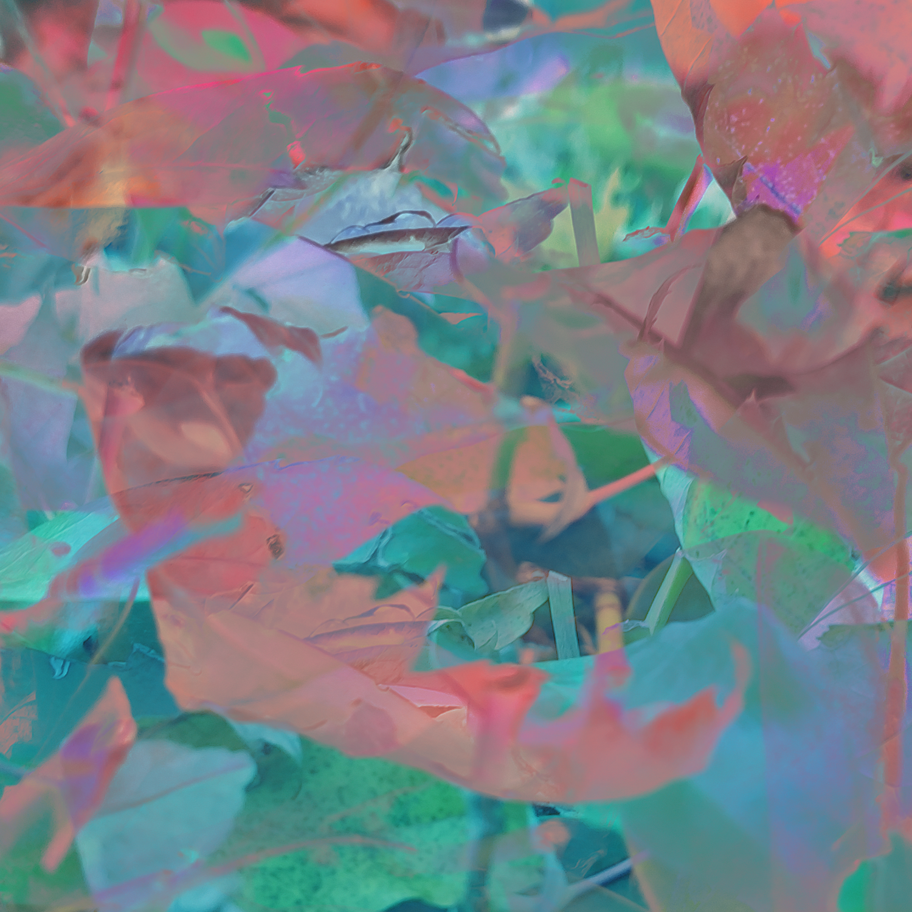
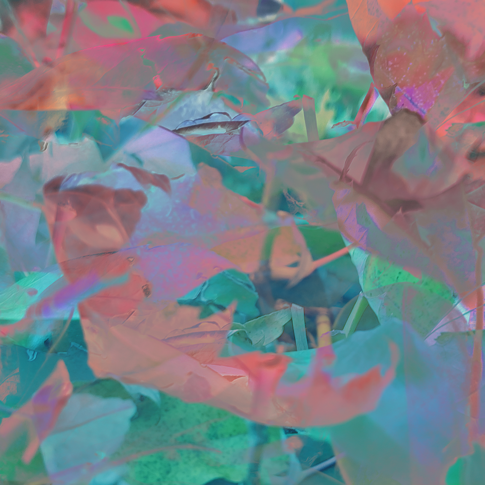
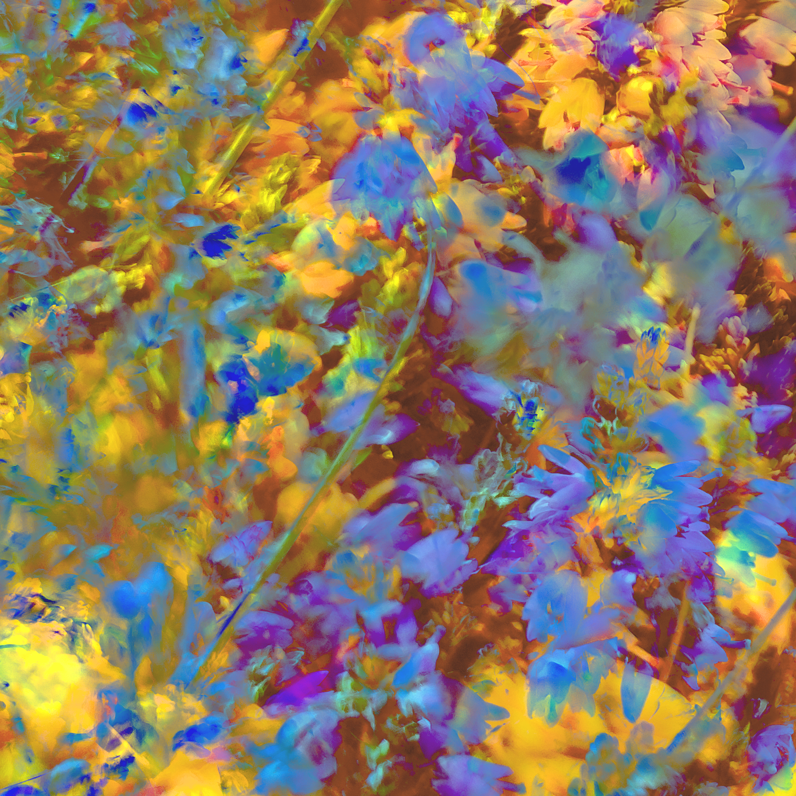
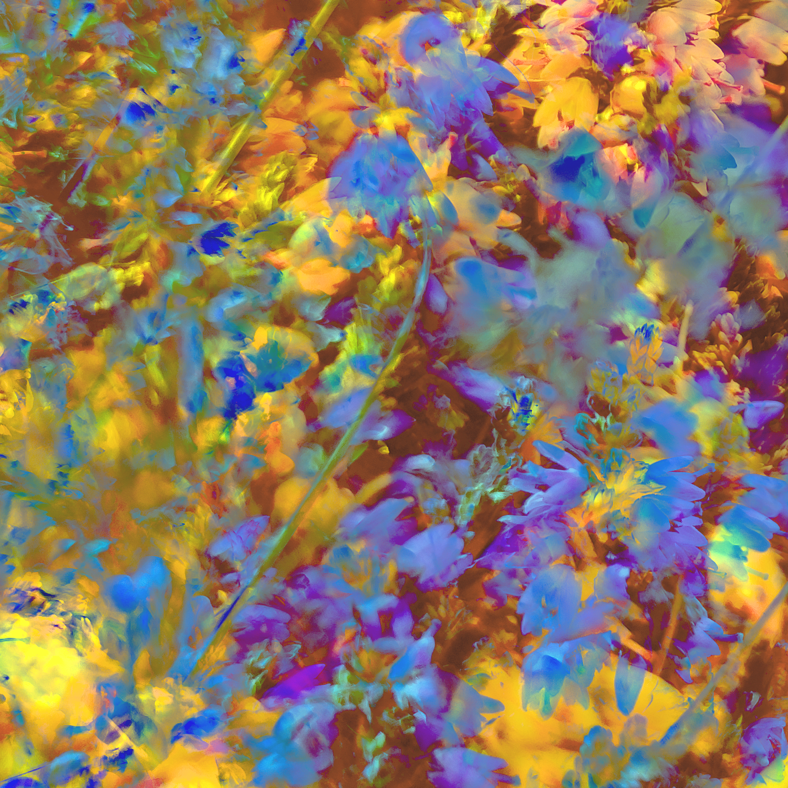

Portfolio graphique
aspects techniques
Je vous présente sur cette page quelques éléments plus "techniques" et qui ne sont pas des créations graphiques à proprement parler.
textures personnelles
J'ai récemment réalisé plusieurs textures utilisables dans des créations diverses et variées, telles que celles que j'ai moi-même présentées par exemple. Je n'ai pas mis le pack complet, pour ne pas surcharger la page, mais vous pouvez retrouver le pack complet ici. Toutes les images de base proviennent de mon téléphone, vous pouvez les regarder ici. 

 

 

 
